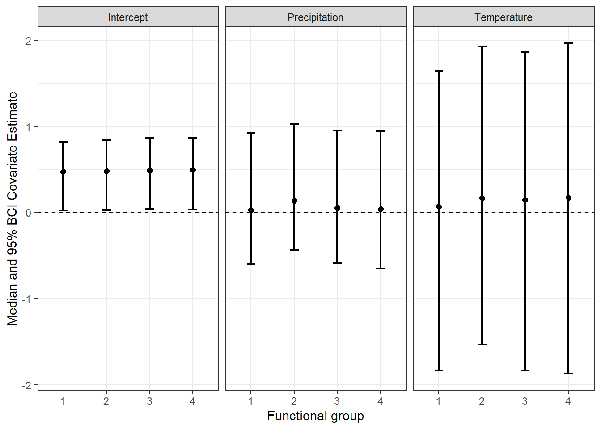
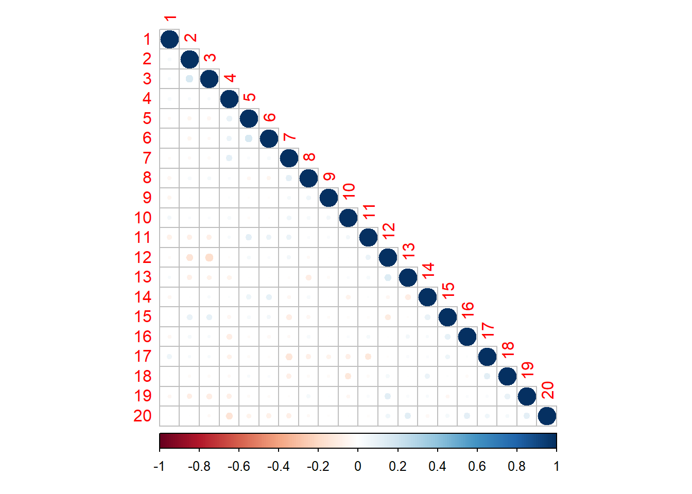

for(k in 1:n.species){ #looping through each species k
for(i in 1:n.sites){ #looping through each site i
#Data are normally distributed around eta for each
#species in each site and around sigma for each species
y[k,i] ~ dnorm(eta[k,i], sig[k])
#eta, which is probit link occupancy probability,
#depends on a set of covariates
#I've allowed these covariates to be an "ancova" of
#each effect varying by a species functional group
eta[k,i] <- a0[GroupID[k]] + #group-level intercept
#group-level effect of antecedent temparature
a1[GroupID[k]]*TAnt[i] +
#group-level effect of antecedent precip
a2[GroupID[k]]*PAnt[i] +
#the residual correlation presence to
#the presence of all other species (the "JS"
#part of the model)
inprod(lv.coef[k,], LV[i,])
}
}Example_Antecedent_JSDM
Example antecedent JSDM with simulated data
This document runs through an example of the joint species distribution model (JSDM) with antecedent climate variables. The model uses a stochastic antecedent modeling framework (Ogle et al. 2015) that combines the effects of a number of time interval climate variables into one regression parameter. This regression parameter is created by weighing the time intervals in the model based on their importance.
The model components
The model examines data, \(y_{k,i}\) for species, \(k\) in site \(i\) with a linear regression.
Within each site, \(i\), the \(TAnt_i\) and \(PAnt_i\) variables are made up of the pre-defined set of time intervals \(t\) for which you have provided temperature \(Tmax_{i,j}\) and precipitation \(PPT_{i,j}\) data. These are the “stochastic antecedent” part of the model. Each of the climate variables, \(v\) (here \(Tmax_{i,j}\) and \(PPT_{i,j}\)), you provided to the model is multiplied by their importance weight, \(w_{v,t}\). These importance weights sum to 1 over all the time intervals.
#Antecedent climate values
for(i in 1:n.sites){
#antecedent climate value is the sum of all the
#weighted lagged values
TAnt[i] <- sum(TmaxTemp[i,])
PAnt[i] <- sum(PPTTemp[i,])
#these are where the data you input into the model
#come in for temp and ppt - here they're multiplied
#by the weights the model has given them for their
#relative importance in driving the climate effect
for(t in 1:n.lag){
TmaxTemp[i,t] <- Tmax[i,t]*wA[t]
PPTTemp[i,t] <- PPT[i,t]*wB[t]
}
}
#Antecedent climate priors
#sum of the weights for the climate lag, so we
# can divide the total value by 1
sumA <- sum(deltaA[])
sumB <- sum(deltaB[])
#Employing "delta trick" to give vector of weights dirichlet priors
#this is doing the dirichlet in two steps
#see Ogle et al. 2015 SAM model paper in Ecology Letters
for(t in 1:n.lag){ #for total number of lags
#the weigths for tmax - getting them to sum to 1
wA[t] <- deltaA[t]/sumA
#the weights for ppt - summing to 1
wB[t] <- deltaB[t]/sumB
#both follow relatively uninformative gamma priors
deltaA[t] ~ dgamma(1,1)
deltaB[t] ~ dgamma(1,1)
}The multi-species model also means that all the group-level parameters \(\alpha_{0, Group}\), \(\alpha_{1, Group}\), and \(\alpha_{2, Group}\) have priors that are centered around a community-level hyperprior.
#Species-group level Priors
for(g in 1:n.groups){
a0[g] ~ dnorm(mu.a0, tau.a0)
a1[g] ~ dnorm(mu.tant, tau.tant)
a2[g] ~ dnorm(mu.ppt, tau.ppt)
}
# Hyperpriors (community level)
#easier to make uniform (~beta(1,1)) prior on non-logistic scale
a0.mean ~ dbeta(1,1)
mu.a0 <- logit(a0.mean)
sd.a0 ~ dunif(0, 5)
tau.a0 <- pow(sd.a0, -2)
mu.tant ~ dunif(-5,5)
sd.tant ~ dunif(0,5)
tau.tant <- pow(sd.tant,-2)
mu.ppt ~ dunif(-5,5)
sd.ppt ~ dunif(0,5)
tau.ppt <- pow(sd.ppt,-2)Finally, to make this model a joint species model, which assumes a relationship between species in the community, we provided the addition of the residual correlation between species in a given site to the regression model, which I won’t go into in much detail. Just as a reminder, this is the inprod(lv.coef[k,], LV[i,]) part of the regression above.
Running the model on simulated data
I ran the model on a simple simulated dataset of 20 species in 5 sites. In this model, we have tracked temperature and precipitation for 3 time periods.
# Load data list ----------------------------------------------------------
#number of species
n.species <- 20
#number of sites
n.sites <- 5
#number of time periods for ppt and temp
n.lag <- 3
#y is a random 1-0 matrix of species x sites
y <- matrix(rbinom(n.species*n.sites, 1, 0.5), n.species, n.sites)
#temp and ppt are random normal matrices of sites x lags
Tmax <- matrix(rnorm(n.sites*n.lag, mean = 0, sd =1), n.sites, n.lag)
PPT <- matrix(rnorm(n.sites*n.lag, mean = 0, sd = 1), n.sites, n.lag)
#Grouping Species into functional groups of species
GroupID <- c(rep(1, 5), rep(2, 5), rep(3, 5), rep(4, 5))
n.groups <- length(unique(GroupID))
#The number of latent variables in the JSDM should be ~ 1/2
# the number of species based on a paper I read
n.lv <- (n.species/2)
data_list <- list(n.species = n.species,
n.sites = n.sites,
n.lag = n.lag,
n.groups= n.groups,
y = y,
Tmax = Tmax,
PPT = PPT,
n.lv = n.lv,
GroupID = GroupID)
# Parameters to track -----------------------------------------------------
params <- c("lv.coef", #to get covariance
"a0", #intercept
"a1", #temp
"a2", #ppt
"sig", #species variance
"wA", #temp weights
'wB') #ppt weights
# Run Model ---------------------------------------------------------------
model <- here("R", "ana_models",
"jags_antecedent_jsdmodel.R")
mod <- jagsUI::jags(data = data_list,
inits = NULL,
model.file = model,
parameters.to.save = params,
parallel = TRUE,
n.chains = 3,
n.iter = 4000,
DIC = TRUE)
Processing function input.......
Done.
Beginning parallel processing using 3 cores. Console output will be suppressed.
Parallel processing completed.
Calculating statistics.......
Done. Evaluating the model
After you check for convergence, etc. (won’t bore you with all the Bayesian model checking stuff), you can output the effects of different covariates in the model, the importance weights for different climate lags, and the covariance matrix for the species in the model.
Effects of covariates

Importance weights for climate lags

Covariance between species
